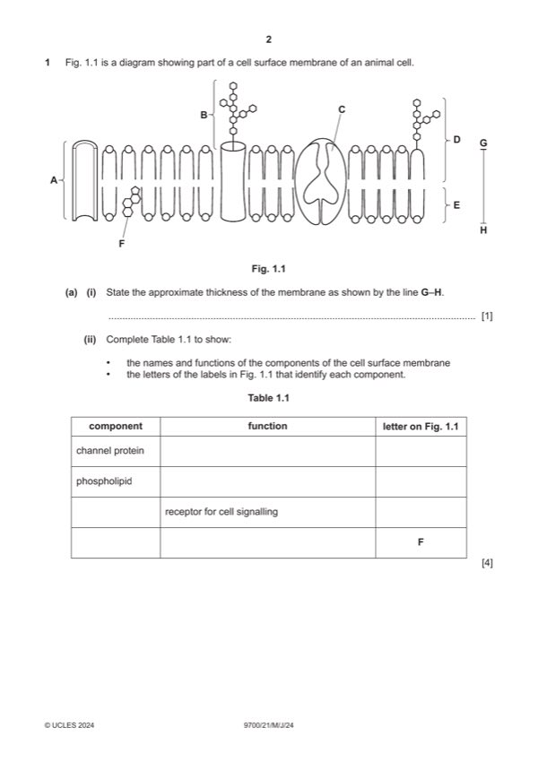

Question 1

Original paper page 2
Part 1(a)(i) — solution
7 nm ; A a suitable range 1
A within the range 5 to 10 nm
unit must be shown
Mark points
- Include the ideas shown in the solution above.
Part 1(a)(ii) — solution
one mark per row – name and letter must agree in row 3 – glycolipid and glycoprotein 4
If no rows are correct or one row is correct, mark by column to give max 2 if one or two columns are correct
component function letter on Fig.1.1
channel protein facilitated diffusion A ;
or
transport of, water / ions / water soluble substances / polar
molecules / charged substances / hydrophilic substances
I named examples of each category
phospholipid forms a bilayer E ;
or
a role within bilayer
e.g. barrier to, water soluble / polar substances / ions
allows diffusion of, fat soluble / non-polar, substances
allows fluidity / provides stability / forms a hydrophobic
core / AW
glycoprotein receptor for cell signalling B
A glycolipid D ;
cholesterol gives (mechanical) stability / maintains fluidity / regulates F ;
fluidity / barrier to water soluble substances
or
at low temperatures, maintains or increases fluidity / prevents
close packing
A prevents hydrophobic ‘tails’ interacting at low temperatures
or
at high temperatures, stabilises the membrane / decreases
fluidity
University Press & Assessment 2024 Page 6 of 15
9700/21 Cambridge International AS & A Level – Mark Scheme May/June 2024
Mark points
- Include the ideas shown in the solution above.
Part 1(b)(i) — solution
each organelle must be drawn in the cytoplasm and labelled for a mark 3
max 2 if organelles are drawn correctly but not labelled or are not labelled correctly
labels must clearly identify the organelles
R any 3D drawings
mitochondrion with two membranes and at least one crista ;
rough endoplasmic reticulum with at least one cisterna (two lines close together) and ribosomes attached on the outside ;
R if any ribosomes completely inside the organelle
smooth endoplasmic reticulum with at least one tube with no ribosomes ;
A RER and SER as labels
A if RER or SER attached to nuclear envelope
Mark points
- Include the ideas shown in the solution above.
Part 1(b)(ii) — solution
Golgi body / dictyosome ; A Golgi, apparatus / complex 2
plus any one from:
modifies / processes, protein(s) / polypeptide(s) / lipid(s) ; A any suitable type of modification or a description
e.g. glycosylation / addition of sugars forming tertiary or quaternary structures
packaging of proteins into (Golgi) vesicles ; I transports
AVP ; e.g. forming lysosomes / cell wall enzymes assembled
University Press & Assessment 2024 Page 7 of 15
9700/21 Cambridge International AS & A Level – Mark Scheme May/June 2024
Mark points
- Include the ideas shown in the solution above.
Part 1 — solution
water is a, good / universal / AW, solvent ;
A dissolves many substances / description of solvent action
A solvent for / dissolves, (named) ions and (named) polar molecules
Mark points
- Include the ideas shown in the solution above.
Part 1 — solution
(both have) endothelium / tunica intima ; A tunica interna
Mark points
- Include the ideas shown in the solution above.
Part 1 — solution
supply, condoms / femidoms / dental dams / item(s) for protection during sex ;
Mark points
- Include the ideas shown in the solution above.
Part 1 — solution
(centrioles) make / organise, microtubules ; A microtubular organising centre / MTOC
Mark points
- Include the ideas shown in the solution above.
Part 1 — solution
three layers of thick-walled cells at, upper / lower, surface ;
A two layers of cells under epidermis / epidermis and (two layers of) hypodermis
Mark points
- Include the ideas shown in the solution above.
Part 1 — solution
(antigen-binding site / variable region) has a shape that is complementary to antigen ; A tertiary / quaternary, structure
Mark points
- Include the ideas shown in the solution above.
Part 1 — solution
removal of introns (from primary transcript) ;
Mark points
- Include the ideas shown in the solution above.